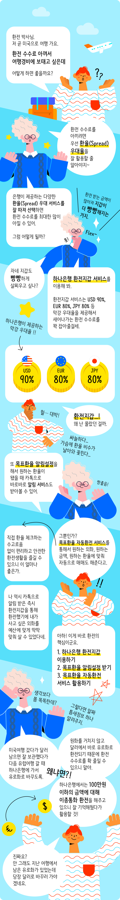
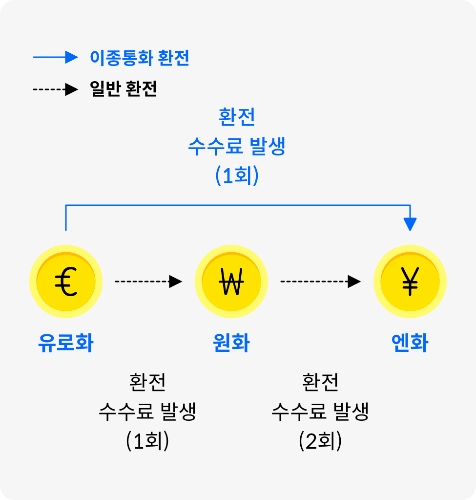

지갑을 살찌우는 환전 비법

환전을 활용하는 3가지 완벽한 방법
-
외환 서비스 똑똑하게 활용하기
은행에서는 저마다 다른 환율(Spread) 우대 서비스를 손님들에게 제공하고 있어요.
따라서 손님들은 내가 어떤 은행에서 얼만큼의 우대를 받을 수 있는가를 따져보는 것이 중요해요. 하나은행의 환전지갑서비스는 막강한 환율(Spread) 우대 혜택을 제공해요.하나은행 환전지갑 서비스 혜택달러화(USD) 90%, 유로화(EUR) 80%, 엔화(JPY) 80% 등 환율(Spread) 우대율 제공
또한 환전지갑에서는 목표환율 알림설정과 자동환전 서비스를 제공해요.
일부러 찾아보지 않아도 원하는 환율이 되면 바로 카카오톡으로 알림을 받으실 수 있고 거래하고 싶은 외화를 원화는 환율에 맞춰 자동으로 환전도 해주니 정말 간편하죠?
하나은행의 차별화된 환전지갑 서비스를 잘 활용해서 똑똑하게 환전하세요~ -
이종통화 환전 활용하기
여행 후 조금씩 남은 외화, 다들 조금씩 가지고 계시죠?
예를 들어, 가지고 있는 통화는 유로인데, 이번 여행에는 엔화가 필요하시다면 이종통화간 환전을 활용해보세요.이종통화간 환전이란

하나은행에서는 미국달러, 유로화, 엔화 등 100만원 상당액 이하의 여행경비에 대해서 이종통화간 환전을 제공하고 있으니, 이를 활용하여 환전수수료를 아껴보세요.
-
외국 동전 환전 꿀팁 활용하기
해외여행 후 남은 동전을 국내 은행에서 환전하려면 해당 동전 통화의 매기준율에 50%로 환전되기 때문에 손해가 커요.
그래서 현지에서 모두 사용하고 돌아오는 것이 좋아요.
하지만 반대로 은행에서 보유하고 있는 동전은 매매기준율의 70%로 사실 수 있는데요.
이게 바로 꿀팁이에요.
여행 나가기 전 방문할 영업점에 미리 문의해서 해당 국가의 동전을 보유하고 있는지 확인해보고 방문하여 지폐보다 싸게 환전해보세요.